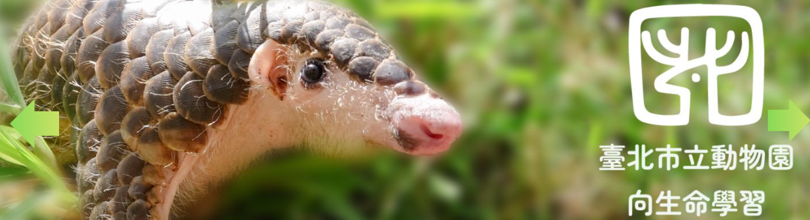
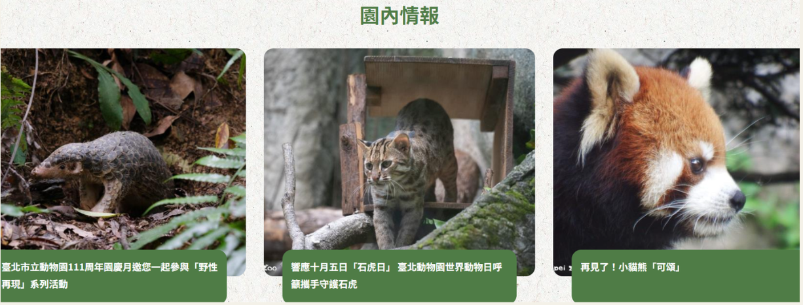
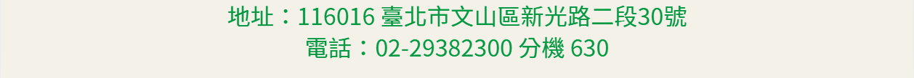

首頁
動物介紹
園區介紹
趣味互動

園區動態
教育活動
【人事】 臺北市立動物園公開甄選駐衛警察隊員 1 名（10/26 止）
【活動】 國慶寶寶看過來！10 月 10 日生日者憑身分證明文件免費入園~~
【公告】 動物藝坊暫停開放
【活動】 10 月 Keeper's Talk、主題教育駐站、定時定點課程
【
停展】 昆蟲館多媒體視聽教室 10 月 18 日下午和 10 月 19 日上午暫停服務
【活動】 臺北動物園建園 111 年國慶「野性再現」系列活動

最新消息
參觀資訊
服務設施
園區介紹
教育資源
加入我們
園區動態
開放時間
餐飲服務
歷史沿革
環境教育
人才招募
教育活動
參觀票價
特色商店
室內館
學習專區
實習生
新聞稿
園區地圖
輪椅、娃娃車、寄物櫃
戶外區
出版專區
動物認養
交通及停車
常見問答
教育館區
團體預約導覽
公共服務
遊園須知
最強後盾
臺北市國小教學
志工服務
